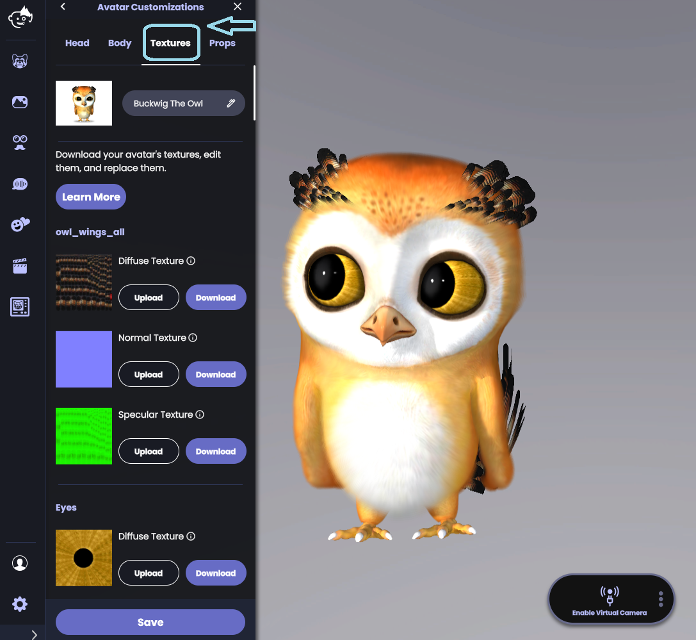
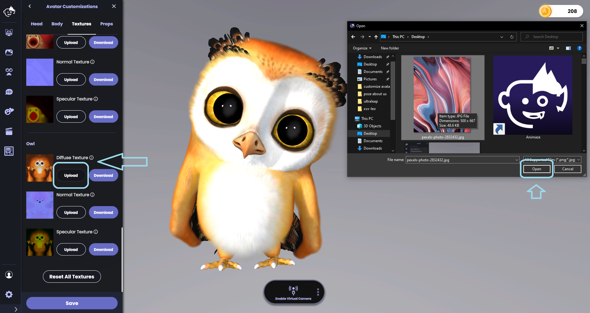
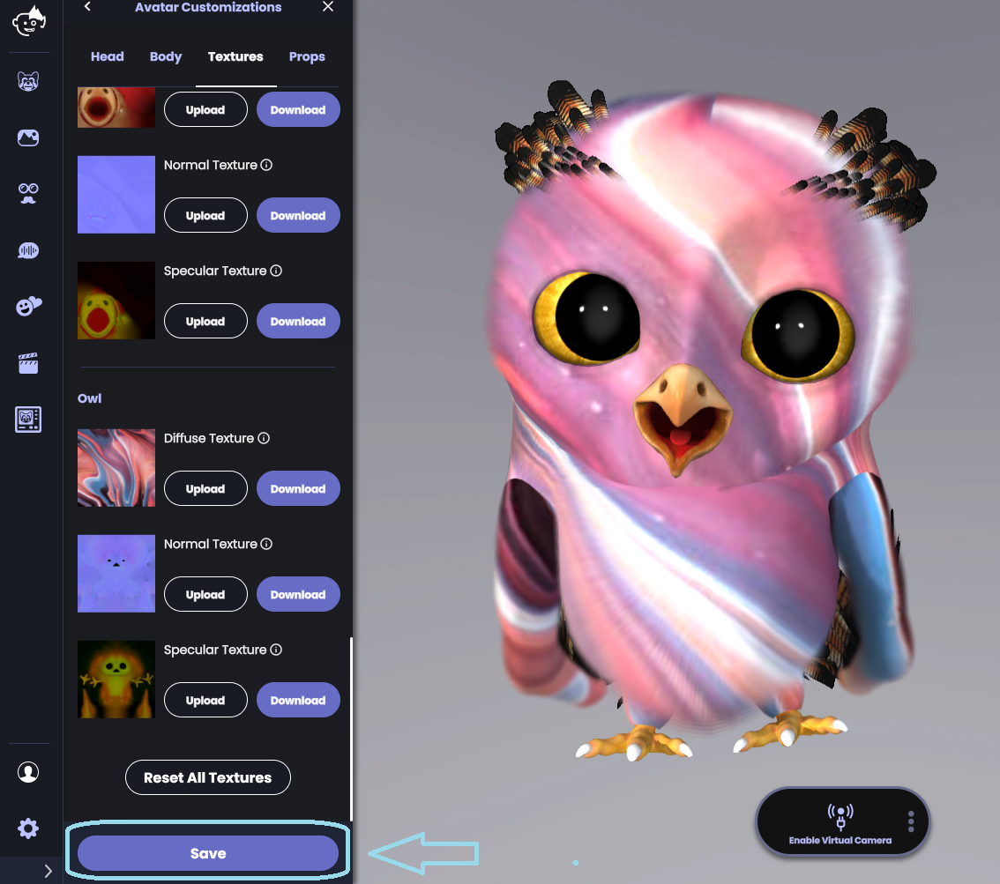

アバターに新しいテクスチャーを追加するにはどうすればよいですか？
Animazeを開き、「アバター」ボタンをクリックします。テクスチャーを変更したいアバターのアイコンをクリックします。

テクスチャーを他の画像ファイルで置き換えるには、「アップロードして置き換え」をクリックします。テクスチャーは一般的なフォーマット(.pngや.jpgなど)の画像ファイルで置き換えることができます。最適な結果を得るには、正方形の画像を使用してください。
PCのフォルダーからテクスチャーを選択します

「保存」をクリックすると、新しいテクスチャーがアバターに適用されます

注意:ほとんどのアバターでは、ディフューズ・テクスチャーと置き換えることで最も大きな効果が得られます。ディフューズ・テクスチャーをアップロードすると、アバターのスキンを効果的に変更できます。新しいテクスチャーをアップロードして、自分だけのアバターを作ってみましょう。
アバターの見た目をデフォルトに戻したい場合は、「すべてのテクスチャーをリセット」をクリックします。